Creative Automation
Robot-assisted, micro-targeted art direction — scaling localized creative across global markets.
Creative at scale is a systems problem. As global campaigns require thousands of localized assets — different languages, cultural references, aspect ratios, and platform specs — the traditional art direction model collapses under its own weight.
This project built an end-to-end pipeline combining AI image generation, automated motion capture, and a robotic arm-driven production system that could execute micro-targeted art direction across global markets without sacrificing creative quality.
The result: a feedback loop between human creative direction and machine execution — where a single creative decision could propagate into hundreds of culturally-specific executions simultaneously.